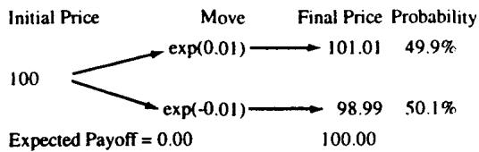
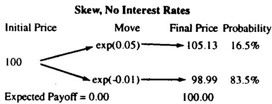
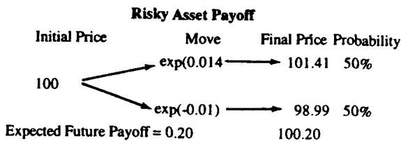
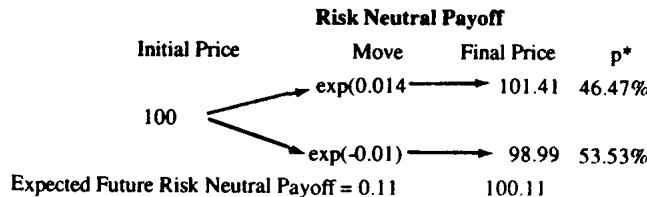

模块 B：风险中性解释（Risk Neutrality Explained）
导读：本模块要解决的问题
Module A 把布朗运动的随机部分搭了出来，并明确把 drift 留到本模块。Module B 要回答的就是 drift 该取什么：在给或有权益（contingent claim）定价时，标的资产的真实预期收益率 必须被替换成无风险利率。Taleb 把这件事叫做"把概率'做手脚'成它的风险中性等价物"，并提醒读者：全书用到的所有概率，都是这样被 trick 过的风险中性概率。
对一个已经能背出 Girsanov 定理、做过测度变换、推过二叉树定价的读者，本模块的命题层面没有新东西。值得停下来体会的，是 Taleb 给出的两条"交易员能在脑子里跑"的理解路径：
- 公平博弈视角：在无利率经济里，"无免费午餐"等价于"每个终值乘以其概率之和等于现价"。skew 的存在不破坏这个公平性，它只是把"更大的上涨幅度"用"更低的发生概率"补偿掉。
- put-call parity 视角：风险中性最容易被交易员接受的形式，是 。无论你看多还是看空，套利都会同时抬高 call 和 put 来维持这个等式，所以个人偏好不该影响期权公允价值。这是测度变换最朴素的交易直觉。
笔记沿原文两步走：第一步讲概率公平、"公平骰子"与 skew；第二步把真实世界的 drift 加进来，给出风险中性论证、测度变换，并用 put-call parity 把它落地。
一、第一步：概率公平、"公平骰子"与 skew
先假设一个没有利率的经济。证券的期望支付是每个终值乘以它的概率。图 B.1 的例子里，，减去初始价 100，净期望为 0。于是证券被定在这样一个价位：基于对可能事件及其概率的信息，它对交易员构成一个公平博弈（fair game）。

在二叉树上，设 为概率、，上行价 、下行价 。在没有任何利率时，
于是
这个等式在经济中始终成立。一言以蔽之，这就是概率公平（probability fairness），即"无免费午餐（no free lunch）"。它被简化成市场价格之间的离散步。
skew 不破坏公平：大幅度要用小概率补偿
如果有 skew 会怎样？设市场可以向上跳一个比 （下行幅度）大得多的 。为了保持概率中性，上行步幅更大，就必须用更低的事件发生概率来补偿。图 B.2 里每个结果乘以其概率：（各自加权后仍回到 100）。

理论映射：公平博弈就是鞅，skew 是状态价格的重新分配
把这一步接回理论，"期望终值等于现价"正是说贴现后的价格过程在该测度下是鞅（无利率时贴现因子为 1）。 是鞅约束的二叉树离散版。skew 的处理则揭示了一个关键认识：定价用的概率并非物理世界里事件真实发生的频率，它是状态价格（state prices）。一个幅度大但概率小的上行状态，与一个幅度小但概率大的下行状态，可以加权出同一个现价。Taleb 用"公平骰子"打比方，本质是说定价测度可以把骰子各面的"权重"重新分配，只要总权重为 1、且加权期望落在现价上。这为第二步的测度变换埋好了伏笔：既然概率可以为公平而重排，那也可以为"让风险资产看起来像无风险资产"而重排。
二、第二步：加入真实世界——风险中性论证
Drift 的问题
设操作者关心的资产在经济中要求 的收益率。那么持有股票的期望收益应是 乘以时间跨度 ，即"drift"收益。问题来了：如果 不同于经济中的无风险利率，因为它含有对某种可称为"风险"的东西的溢价，那定价该怎么办？
答案在 Black-Scholes-Merton 的突破里。没有下面这个论证，就不可能有期权定价公式：用套利推导证券价格意味着复制（replication）。 期权复制消去了 delta、消去了对资产方向变化（即收益率）的暴露，于是操作者只需关心资产的波动率，而不必关心它要求的收益率，也不必关心操作者自己的风险偏好。BSM 构造了一个自融资（现金流中性）、delta 中性的组合，通过连续再平衡（买卖标的、并用由此得到的残余现金买卖无风险债券）来复制期权。期权的价值因而对应于这个组合的复制成本，而复制成本只取决于资产波动率和经济中的无风险利率。
由此得到核心结果：
对套利交易与期权估值，标的（不付息资产）的 drift 需要被替换成经济中的风险中性利率。
测度变换：虚构地改写概率
在树上，每期需要赚得无风险利率（例中 0.11）。金融学界有几种调整方式。第一种是加大上行步与下行步之差。第二种（在障碍期权定价里会很顺手）是改变每个移动的概率，同时保持概率之和为 100%。

操作者通过虚构地改变概率来"欺骗"分布，使得（仅为衍生品估值目的）期望支付看起来像无风险资产的支付。这叫做概率测度变换（change of probability measure）。图 B.4 是变换后的结果。

设 为经济中的无风险利率，所关心资产的期望未来支付增长率为 。操作者定义上下行价：
真实测度下，资产按 增长，满足
操作者创造一个新的概率测度 ，使得在同一期内满足虚构的复制（无风险增长）值：
理论映射：解出 ，这就是 Girsanov 在二叉树上的样子
把上面那个等式解出来，风险中性概率是
这就是二叉树定价里那个著名的风险中性概率（连续极限下对应 ）。它与真实概率 的差别，完全由风险溢价 决定：把分子里的 换成 ，就把"资产按 增长"改写成"资产按 增长"。Taleb 说的"欺骗分布"，严格地说就是Girsanov 定理：在连续时间里，从真实测度 到风险中性测度 的变换，等价于给布朗运动加一个漂移平移 （市场风险价格），
Radon-Nikodym 导数则刻画两个测度之间的"概率重排权重"。二叉树上把 改成 、保持步长 不变，正是这个平移的离散版：方差（由 即 决定）原封不动，只有 drift 被换掉。这呼应了 BSM 的核心——期权价值只依赖 和 ，与 无关。Taleb 特意提到"改概率而非改步长"在障碍期权里更顺手，原因是障碍触发是路径事件，固定 （即固定波动率几何）、只调测度，能让障碍位置和触碰概率的处理保持一致。
三、Option Wizard：交易员为何天然懂风险中性
Taleb 给出交易员最容易接受的版本：一旦想到 put-call parity，风险中性就好懂了。
设资产预期以 23% 增长。但这个资产可以每天被"roll"（卖出再买回以避免交割），年化 11%，这个 11% 是融资成本与持有收益（carry）之差，它使得资产一天后的远期价格按年化 11% 走低。如果 call 相对"roll"溢价交易（于是 put 相对"roll"折价），那么操作者可以卖出 call、买入 put、并持有那个每天只花他年化 11% 的资产。因此所有 put 和 call 都必须按"roll"（无风险利率的净额）定价。
换个角度看：资产的远期是风险中性的（cash-and-carry 使它按"无风险利率减收益率"交易）。鉴于这种中性，put 和 call 必须合成地复制远期，因为欧式期权满足
"看多"通常会抬高 call 的价值。但套利同样会抬高 put 的价值以维持这个等式，这构成一个悖论：看空也会抬高 put 的价值。所以个人偏好不应影响期权的公允价值。
理论映射：parity 把"偏好无关"变成无套利的代数
这一段是整个模块对交易员最有说服力的论证。 是静态复制恒等式，它不含任何概率、不含 、不含风险偏好，只由 cash-and-carry 套利锁死。远期价 本身就是风险中性的（drift 是 而非 ）。一旦 被套利钉死， 和 就只剩一个自由度：抬高 必然抬高 ，二者绑定。于是"看多抬 call、看空抬 put"在等式约束下同时成立，方向观点被消掉，留下的只有波动率。这正是 BSM"偏好无关"在最朴素层面的代数表达，也提示了为公平/为套利而重排概率测度的技术。Taleb 说这"暗示了改变概率测度的技术，基于 Girsanov 定理，在期权定价里还会有更多应用"。
配对资产的风险中性 drift = 两个 drift 之差
一个期权理论的推广是：用于一个货币对的风险中性 drift，是两个风险中性 drift 之差。对付息股票，它变成 carry 之差（股息减无风险利率）；对债券，它变成其 carry 与融资利率之差；以此类推。
动态对冲者应当始终使用风险中性概率。
理论映射：这就是 change of numeraire 与外汇两测度
"配对资产的 drift 是两个 drift 之差"是 change of numeraire 的直接结论。在外汇里，USD 计价下的风险中性 drift 是 ；换成外币计价，drift 变号，这正是第 22 章两国悖论的来源。对付息股票，标的在 下的 drift 是 （无风险减股息率），因为持有股票拿股息、放弃了债券利息，远期必须扣掉这块 carry 才无套利。这条规则把单资产的风险中性推广到任意 carry 结构：定价时永远用"融资 carry 之差"作 drift，而不是真实预期收益。动态对冲者"始终用风险中性概率"的实务含义是：你做 delta 对冲时投影的远期、你算的 theta、你估的提前行权边界，全都建立在 而非 之上，混入真实 drift 就会把对冲做错。
四、本模块综述：理论与实务的对照
| Taleb 的实务命题 | 对应的理论命题 |
|---|---|
| 无利率下"期望终值 = 现价"即无免费午餐 | 贴现价格是鞅， |
| skew = 大幅度用小概率补偿 | 定价用状态价格，非物理频率 |
| drift 必须换成无风险利率 | 风险中性定价，BSM 偏好无关 |
| 复制消去方向暴露，只留波动率 | delta 中性自融资组合，价值只依赖 |
| 虚构地改写概率（保持和为 1） | 测度变换， |
| 改概率而非改步长，障碍期权更顺手 | Girsanov 平移 drift、保持 ；路径事件需固定波动率几何 |
| 所有 put/call 按"roll"定价 | ，远期由 cash-and-carry 锁死 |
| 看多抬 call、看空抬 put 的悖论 | parity 约束下偏好被消掉，只剩波动率 |
| 配对资产 drift = 两 drift 之差 | change of numeraire；外汇两测度、carry 差 |
| 动态对冲者始终用风险中性概率 | 在 下投影远期、算 theta、定行权边界 |
核心观点
第一，风险中性是一个为无套利定价服务的计算工具，而非一个关于世界的信念。它把真实 drift 换成 ，方差保持不变，只为让复制成本算得出来。
第二，测度变换在二叉树上就是解一个 ，在连续时间里就是 Girsanov 给布朗运动加一个 的漂移平移。skew 的处理预演了这种"为目的重排概率"的手法。
第三，交易员通过 put-call parity 天然理解风险中性。 不含偏好、不含 ，套利同时绑定 call 和 put，方向观点被消掉，只剩波动率定价。
第四，风险中性 drift 永远是 carry 之差。单资产是 或 ，货币对是两国利率之差，债券是 carry 减融资。动态对冲的每一步都建立在 上。
一句话收束
本模块最该记住的一句：风险中性定价就是把标的的真实预期收益 换成无风险利率、方差原封不动地保留，二叉树上它是解出 、连续时间里它是 Girsanov 给布朗运动平移一个市场风险价格，而交易员只需记住 就已经在用它了。